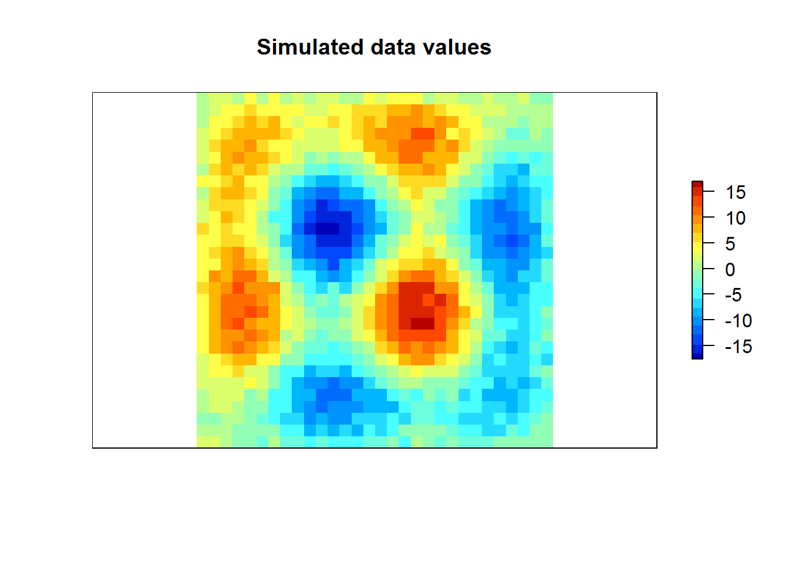
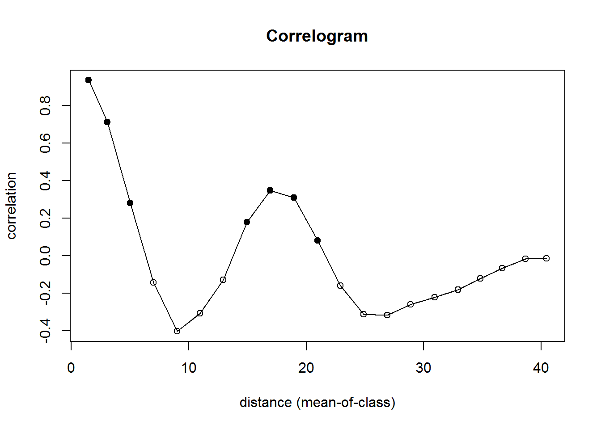
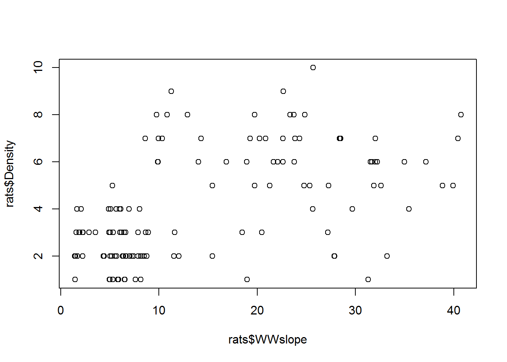
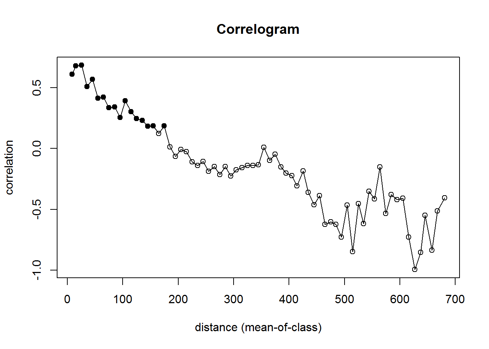
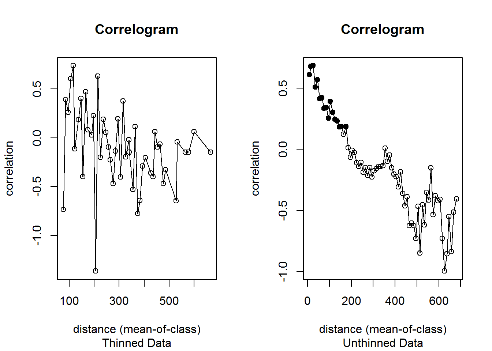
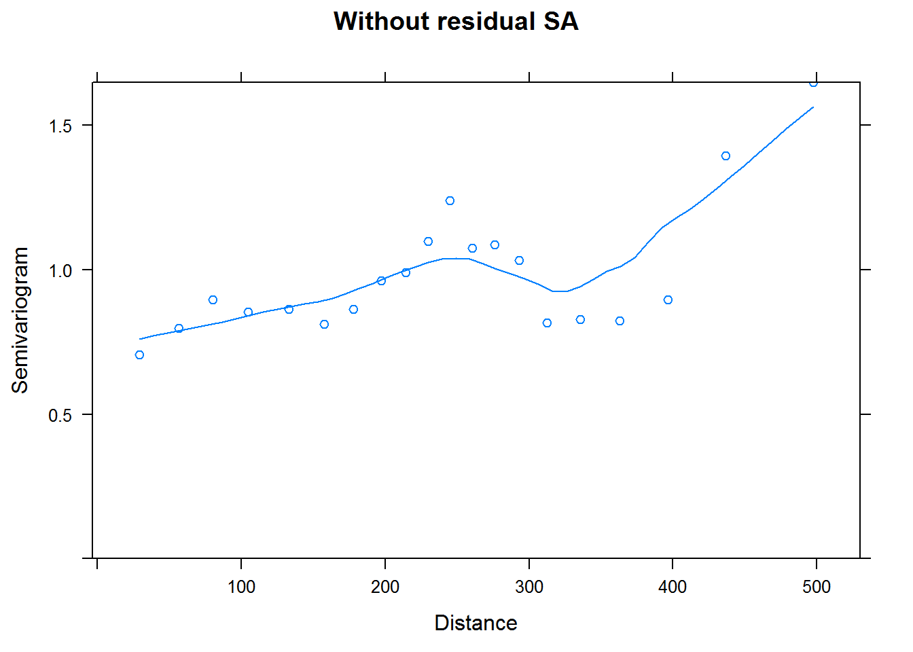
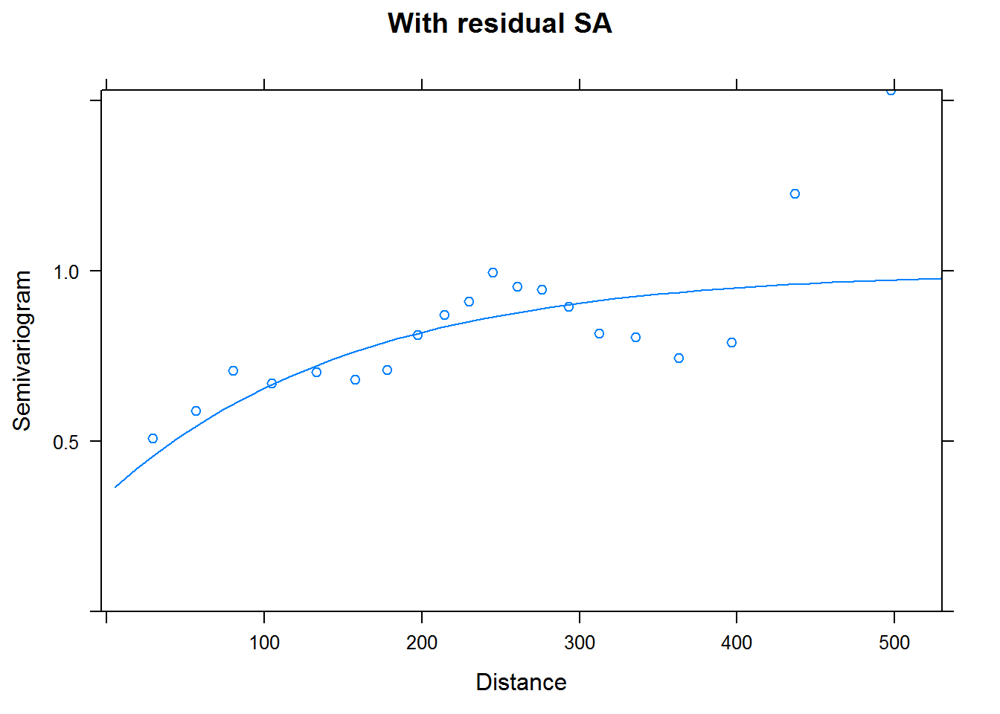
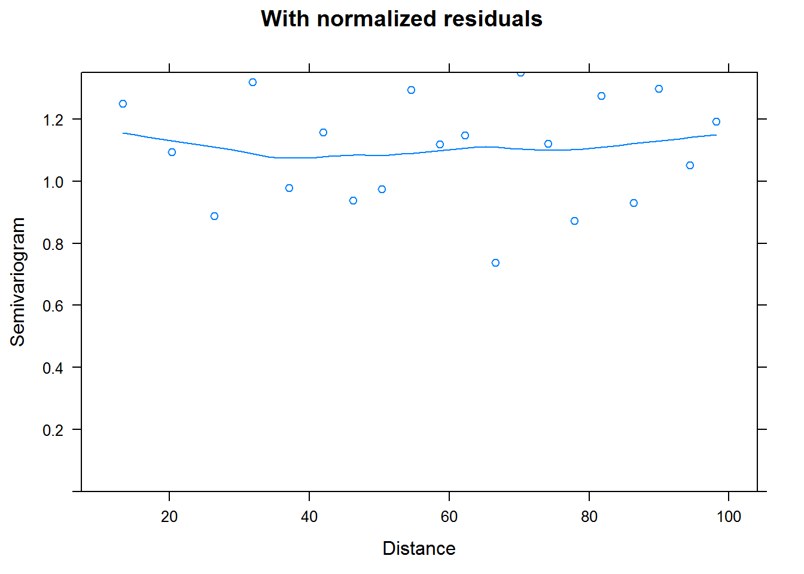

###First we need to install the package sp and attach to the following libraries:
library(raster)## Loading required package: splibrary(vegan)## Warning: package 'vegan' was built under R version 3.3.2## Loading required package: permute## Warning: package 'permute' was built under R version 3.3.2## Loading required package: lattice## This is vegan 2.4-1library(colorRamps)## Warning: package 'colorRamps' was built under R version 3.3.2library(emdbook)side <- 30 #Set the number for side
Matrix <- matrix(NA, nrow=side, ncol=side) #our matrix with 30 rows and 30 columns
x.coord <- rep(1:side, each=side) #replicates x values. For all 30, and repeats "each" of 30 times
y.coord <- rep(1:side, times=side) #same as above for the y-values, or rows
xy <- data.frame(x.coord, y.coord) #create dataframe of x and y coordinates
xy.dist <- dist(xy) #computes distance matrix computed by using specified distance measure to compute distances between rows of a data matrixpcnm.axes <- pcnm(xy.dist)$vectors #
z.value <- pcnm.axes[,8]*200 + rnorm(side*side, 0, 1)
Matrix[] <- z.value
r <- raster (Matrix)plot(r, axes=F, col=matlab.like(20), main ="Simulated data values") #Create plot with pixel colors ranging from blue to red. Pixels should show similar colors close together, and different values as intermediate distances, then similar again at larger distance.
library(ncf) #package for building correlograms## Warning: package 'ncf' was built under R version 3.3.2##
## Attaching package: 'ncf'## The following object is masked from 'package:vegan':
##
## mantel.correloglibrary(raster)
library(ggplot2)## Warning: package 'ggplot2' was built under R version 3.3.2library(nlme)## Warning: package 'nlme' was built under R version 3.3.2##
## Attaching package: 'nlme'## The following object is masked from 'package:raster':
##
## getDatancf.cor <- correlog(x.coord, y.coord, z.value, increment=2, resamp=50) plot(ncf.cor) 
rats <- read.csv("Cap_data_for SA.csv")
rats$Habitat <- NULL
head(rats)## Trapline.N Year Dates.Trap Trap.Numbe UTM.E UTM.N
## 1 WWF-T1 2016 5/30-6/1; 6/10-6/14 1 386633 3921681
## 2 WWF-T1 2016 5/30-6/1; 6/10-6/14 2 386643 3921646
## 3 WWF-T1 2016 5/30-6/1; 6/10-6/14 3 386633 3921617
## 4 WWF-T1 2016 5/30-6/1; 6/10-6/14 4 386632 3921590
## 5 WWF-T1 2016 5/30-6/1; 6/10-6/14 5 386683 3921518
## 6 WWF-T1 2016 5/30-6/1; 6/10-6/14 6 386663 3921495
## General.Ho Mapped.Hou WWslope
## 1 Prunus Fasiculata/sand/soil 2.241974
## 2 Prunus Fasiculata/sand/soil 5.539409
## 3 Prunus Fasiculata/sand/soil 5.984147
## 4 Clear WRM sign/piled sticks PRFA/sand/soil 4.907840
## 5 PRFA/sand/soil 4.984762
## 6 PRFA/sand/soil WWF WRM6 5.801394
## DEMKV Density
## 1 1361.522 3
## 2 1359.079 2
## 3 1357.207 4
## 4 1355.613 3
## 5 1352.786 1
## 6 1353.761 1#Let's first define some objects we'll use from the dataset
x.coordrats <- (rats$UTM.E)
y.coordrats <- (rats$UTM.N)
density <- (rats$Density)
slope <- (rats$WWslope)
elevation <- (rats$DEMKV)plot(rats$Density~rats$WWslope)
ncf.rats <- correlog(x.coordrats, y.coordrats, density, increment = 10, resamp = 50) # measuring for the "slope" variable, increment for uniformly distributed distance classes, resampling at 50plot(ncf.rats)
thin.max <- function(x, cols, npoints){ #Create empty vector for output
inds <- vector(mode="numeric")
#Create distance matrix
this.dist <- as.matrix(dist(x[,cols], upper=TRUE))
#Draw first index at random
inds <- c(inds, as.integer(runif(1, 1, length(this.dist[,1]))))
#Get second index from maximally distant point from first one
#Necessary because apply needs at least two columns or it'll barf
#in the next bit
inds <- c(inds, which.max(this.dist[,inds]))
while(length(inds) < npoints){
#For each point, find its distance to the closest point that's already been selected
min.dists <- apply(this.dist[,inds], 1, min)
#Select the point that is furthest from everything we've already selected
this.ind <- which.max(min.dists)
#Get rid of ties, if they exist
if(length(this.ind) > 1){
print("Breaking tie...")
this.ind <- this.ind[1]
}
inds <- c(inds, this.ind)
}
return(x[inds,])
}thindat <- thin.max(rats, c("UTM.E", "UTM.N") , 20)
thindat## Trapline.N Year Dates.Trap Trap.Numbe UTM.E UTM.N
## 57 WWF-T3 2016 7/29-8/2 9 386376 3921463
## 48 WWF-T2 2016 6/6-6/10 30 386730 3921157
## 1 WWF-T1 2016 5/30-6/1; 6/10-6/14 1 386633 3921681
## 128 WWH-T4 2016 7/28-8/1 19 386466 3921036
## 8 WWF-T1 2016 5/30-6/1; 6/10-6/14 8 386728 3921415
## 80 WWH-T1 2016 5/30-6/1 1 386514 3921271
## 32 WWF-T2 2016 6/6-6/10 14 386564 3921515
## 79 WWH-T2 2016 6/12-6/16 11 386372 3921312
## 19 WWF-T2 2016 6/6-6/10 1 386256 3921526
## 41 WWF-T2 2016 6/6-6/10 23 386647 3921276
## 66 WWF-T3 2016 7/29-8/2 18 386485 3921391
## 13 WWF-T1 2016 5/30-6/1; 6/10-6/14 13 386775 3921304
## 5 WWF-T1 2016 5/30-6/1; 6/10-6/14 5 386683 3921518
## 37 WWF-T2 2016 6/6-6/10 19 386626 3921380
## 119 WWH-T4 2016 7/28-8/1 10 386497 3921133
## 27 WWF-T2 2016 6/6-6/10 9 386456 3921521
## 4 WWF-T1 2016 5/30-6/1; 6/10-6/14 4 386632 3921590
## 35 WWF-T2 2016 6/6-6/10 17 386562 3921433
## 101 WWH-T3 2016 7/10-7/14 12 386439 3921257
## 89 WWH-T1 2016 5/30-6/1 10 386403 3921392
## General.Ho Mapped.Hou WWslope
## 57 Sand/YUBR, PRFA, ERFA 8.747550
## 48 sand/YUBR/PRFA/ARTR 1.915347
## 1 Prunus Fasiculata/sand/soil 2.241974
## 128 Rock/RHCA, HEWH, Ribes 5.256724
## 8 YUBR-ERNA/sand/soil WWF WRM10 2.271397
## 80 Rock/RHCA WWH WRM 1 15.453657
## 32 sand/PRFA/YUBR near WWF WRM 2 4.937571
## 79 boulder, RHCA and EPVI adjacent; sign of scat 28.369524
## 19 sand/YUBR/ERNA-PHDI near WWF WRM 14 7.884498
## 41 sand/ERNA 8.153729
## 66 Sand/ERNA, PHDI 4.334962
## 13 PRFA/sand/soil WWF WRM13 1.417149
## 5 PRFA/sand/soil 4.984762
## 37 sand/YUBR/ERNA 5.696445
## 119 Rock/ERFA, HEWH 19.740135
## 27 rock/PRFA-ERFA 7.859442
## 4 Clear WRM sign/piled sticks PRFA/sand/soil 4.907840
## 35 sand/PRFA 6.961901
## 101 Rock/SCDE, EPVI, RHCA, ERCU 38.858643
## 89 Rock/RHCA WWH WRM 20 25.683107
## DEMKV Density
## 57 1378.234 2
## 48 1341.825 3
## 1 1361.522 3
## 128 1365.244 5
## 8 1348.371 3
## 80 1368.096 5
## 32 1361.121 1
## 79 1423.261 7
## 19 1394.264 3
## 41 1349.130 1
## 66 1366.792 2
## 13 1344.861 2
## 5 1352.786 1
## 37 1351.110 2
## 119 1369.316 8
## 27 1371.856 2
## 4 1355.613 3
## 35 1358.479 4
## 101 1402.438 5
## 89 1383.456 10head(thindat)## Trapline.N Year Dates.Trap Trap.Numbe UTM.E UTM.N
## 57 WWF-T3 2016 7/29-8/2 9 386376 3921463
## 48 WWF-T2 2016 6/6-6/10 30 386730 3921157
## 1 WWF-T1 2016 5/30-6/1; 6/10-6/14 1 386633 3921681
## 128 WWH-T4 2016 7/28-8/1 19 386466 3921036
## 8 WWF-T1 2016 5/30-6/1; 6/10-6/14 8 386728 3921415
## 80 WWH-T1 2016 5/30-6/1 1 386514 3921271
## General.Ho Mapped.Hou WWslope DEMKV Density
## 57 Sand/YUBR, PRFA, ERFA 8.747550 1378.234 2
## 48 sand/YUBR/PRFA/ARTR 1.915347 1341.825 3
## 1 Prunus Fasiculata/sand/soil 2.241974 1361.522 3
## 128 Rock/RHCA, HEWH, Ribes 5.256724 1365.244 5
## 8 YUBR-ERNA/sand/soil WWF WRM10 2.271397 1348.371 3
## 80 Rock/RHCA WWH WRM 1 15.453657 1368.096 5xthin <- (thindat$UTM.E) #setting the thinned eastings
ythin <- (thindat$UTM.N) #setting the thinned northings
thinslope <- (thindat$WWslope) #setting the thinned slope values
thindensity <- (thindat$Density) #setting the thinned density thinned.rats <- correlog(xthin, ythin, thindensity, increment = 10, resamp = 50) #increment for uniformly distributed distance classesgraphics.off() ###Now, let’s see the correlogram with the thinned data
par(mfrow=c(1,2))
plot(thinned.rats) #correlogram of thinned data
title(sub="Thinned Data")
plot(ncf.rats) #plots the results of correlog function
title (sub = "Unthinned Data") 
m2 <- gls(log1p(density)~slope + I(slope^2), data = rats)
vario2<- Variogram(m2, form = ~UTM.E + UTM.N, resType = "pearson")
plot(vario2, main = "Without residual SA")
m3 <- gls(log1p(density)~slope + I(slope^2), correlation = corExp(form = ~UTM.E + UTM.N, nugget = TRUE), data = rats)
vario3 <- Variogram(m3, form = ~UTM.E + UTM.N, resType = "pearson")
vario4 <- Variogram(m3, form = ~UTM.E + UTM.N, resType = "normalized", maxDist = 100)AIC(m2,m3)## df AIC
## m2 4 153.8928
## m3 6 112.0263par(mfrow=c(1,2))
plot(vario3, main = "With residual SA")
plot(vario4, main = "With normalized residuals")